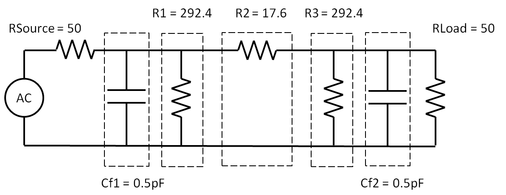

n
Port
A JavaScript Based Microwave Analysis and Learning Tool
code
/
readme
/
an RF repl
/
home
Output Area
var g = nP.global; g.fList = g.fGen(.1e9,10e9,21); // define attenuator components var R1 = nP.R(292.4); var R2 = nP.R(17.6); var R3 = nP.R(292.4); var Cf1 = nP.C(0.5e-12); var Cf2 = nP.C(0.5e-12); var Tee = nP.Tee(); var Short = nP.Short(); // hook up the ideal attenuator with nodal var attenuator = nP.nodal( [Tee, 2, 1, 3], [R1, 2, 4], [Short, 4], [R2, 3, 5], [Tee, 6, 5, 7], [R3, 6, 8], [Short, 8], ['out', 1, 7] ); // add input and output shunt capacitance var attenuatorWithParasitics = nP.nodal( [Tee, 2, 1, 3], [Cf1, 2, 4], [Short, 4], [Tee, 6, 3, 7], [R1, 6, 8], [Short, 8], [R2, 7, 9], [Tee, 10, 9, 11], [R3, 10, 12], [Short, 12], [Tee, 14, 11, 15], [Cf2, 14, 16], [Short, 16], ['out', 1, 15] ); // specify the outputs var s21dB = attenuator.out('s21dB'); var s21dBParasitics = attenuatorWithParasitics.out('s21dB') // compare output plots with nP.lineChart(); nP.log('Ideal and non-ideal 3dB attenuator demonstration') var chart1 = nP.lineChart({inputTable: [s21dB, s21dBParasitics]});
